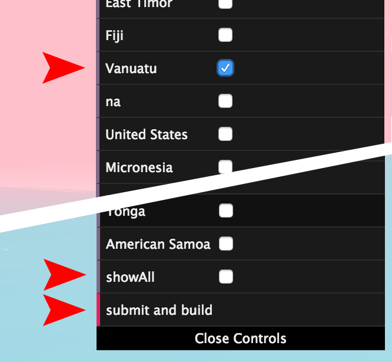
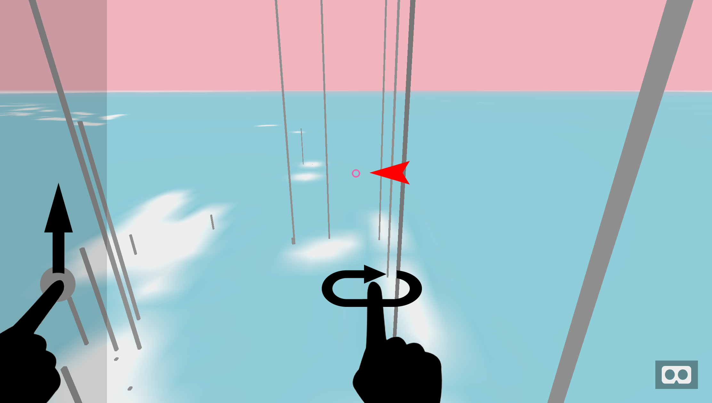
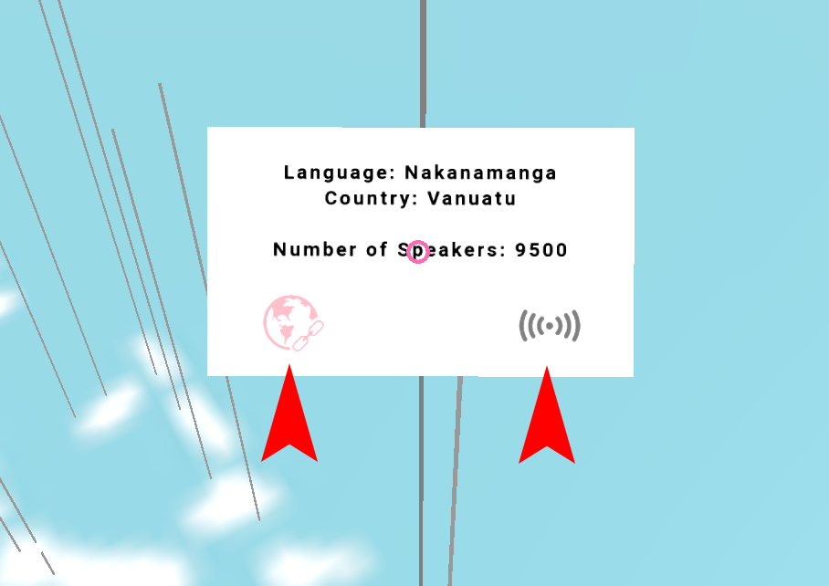

Glossopticon VR visualises and sonifies over 1,500 languages of the Pacific region. Languages are mapped by location and number of speakers and you can fly through a spatialised mix of the recorded voices of many of the languages.
Glossopticon VR is designed to be viewed on a VR headset, though you can view it without them on desktop or mobile device.
Remember to check the volume on your device is turned up.
Basics
Clicking the 'Enter' button below will start the VR visualisation. When the menu appears on the right, choose the countries data you would like to view. on a mobile device, performance will be optimal if you choose only a single country to view at a time. If you are on a desktop computer, you can choose 'show all', which will allow you to view all of the data points even from a distance. When you are ready click 'submit and build'.
You can now click or tap the goggles icon in the bottom right corner to enter VR if you are using a headset.
Enter glossopticon VR
Navigation
Desktop: Click and drag to look around, W,A,S,D or arrow keys to move. Use the cursor to look at and select language data beacons.
Mobile: touch in the gray panel on left side to move forward, touch and drag elsewhere on the screen to look around. Use the cursor to look at and select language data beacons.
Cardboard VR: Look around and move forward using the cardboard button. Use the cursor to look at and select language data beacons.
Desktop VR: (Vive prefered) Look around and move using the right-hand controller’s touchpad. Use the cursor to look at and select language data beacons.

Collecting Links
Each language has an information panel you can bring up by looking at its data beacon. By looking at the world link icon you can save a link to more information about that language to view once you finish exploring in VR.
By looking at the audio icon, you can isolate the sound of that particular language. When you move again, the other language will once again start to fill the environment.
Return to this page and click the 'Explore Links' button to look over the links you have saved for more information on a language.
Explore Collected Links
VR Setup
Visit the webVR Rocks site to get up to the minute details on running this project in webVR.
For mobile use, we recommend the Chrome browser on an android phone with a Cardboard viewer with screen touching button. IOS is also supported, though may be less reliable, where the use of Safari is recommended.
For desktop VR we recommend a Vive headset and the latest Firefox browser.
webvr.rocks
Credits
The Glossopticon VR project is a project by Rachel Hendery (Western Sydney University) and Andrew Burrell (University of Technology Sydney). It’s part of a larger Glossopticon VR and AR exhibition by Nick Thieberger (Melbourne University), Rachel Hendery, and Andrew Burrell. The project was funded by the Centre of Excellence for Language Dynamics (COEDL), through a Transdisciplinary and Innovation Grant.
Rachel Hendery – project conception and linguistics.
Andrew Burrell – VR and data visualisation design and development.
Project Files
The source files for this project are available on github.
https://github.com/clavis-magna/glossopticon-webvr

Contact